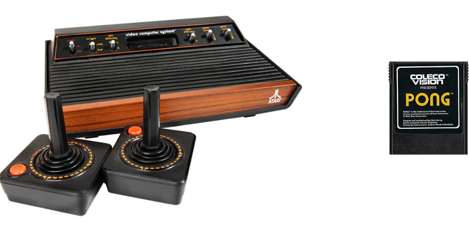

Policy Gradient utilizando CUDA aplicado al juego Pong de ATARI
Objetivo
Crear un agente que pueda aprender a jugar el videojuego Pong a partir de la secuencia de matrices de pixeles que constituyen el juego. Para lograr esto, se hará uso de una red neuronal utilizando el método clásicos de optimización descenso de gradiente. La entrada de la red sería la matriz de pixeles y la salida es un elemento del espacio de acciones que el agente puede tomar.
Andrej Karpathy
Arcade Learning Environment

Policy forward
double policy_forward(std::vector x,
std::vector w1,
std::vector w2,
std::vector &hiddenStates){
double prob;
std::vector h= matrixMatrixMultiplication(w1.data(), x.data(), H, D, 1);
int size = h.size();
relu(h);
hiddenStates.reserve(hiddenStates.size() + h.size());
hiddenStates.insert(hiddenStates.end(), h.begin(), h.end());
std::vector g= matrixMatrixMultiplication(w2.data(), h.data(), 1, H, 1);
prob = sigmoid(g[0]);
return prob;
}
Kernel de multiplicación de Matriz en CUDA
__global__ void gaxpymm(double *y, double *a, double *b, int m, int n, int p){
int bid = blockIdx.x;
int tid = threadIdx.x;
extern __shared__ double dots_s[];
if(bid<m)
if(tid<n){
for(int c=0;c<p;c++)
dots_s[bid*n*p+tid*p+c] = a[bid*n+tid] * *(b+(tid*p+c));
__syncthreads();
if(tid == 0){
for(int c=0;c<p;c++)
for(int i=1;i<n;i++){
dots_s[bid*n*p+c] +=dots_s[bid*n*p+i*p+c];
}
for(int c=0;c<p;c++)
*(y+(bid*p+c))=dots_s[bid*n*p+c];
}
}
}
Policy backward
dlogps.push_back(fakeLabel - prob);
void policy_backward(std::vector w1, std::vector w2, std::vector &dw1, std::vector &dw2, std::vector exs, std::vector dlogps, std::vector hiddenStates, int numberOfGames) {
dw2 = matrixMatrixMultiplication(hiddenStates.data(), dlogps.data(), H, numberOfGames, 1);
std::vector dh = matrixMatrixMultiplication(w2.data(), dlogps.data(), H, 1, numberOfGames);
prelu(dh, hiddenStates);
dw1 = matrixMatrixMultiplication(dh.data(), exs.data(), H, numberOfGames, D);
}
Bibliografía
[1] L. Bottou, F. E. Curtis, and J. Nocedal. Optimization methods for large-scale machine learning. CoRR, abs/1606.04838, 2016.
[2] L. Bottou, O. Bousquet, The tradeoffs of large scale learning. In Proc. Advances in Neural Information Processing Systems 20 161–168 (2007).
[3] Y. A. LeCun, L. Bottou, G. B. Orr, K.R. Müller. Efficient backprop. Neural networks: Tricks of the trade, pages 9–48. Springer, 1998